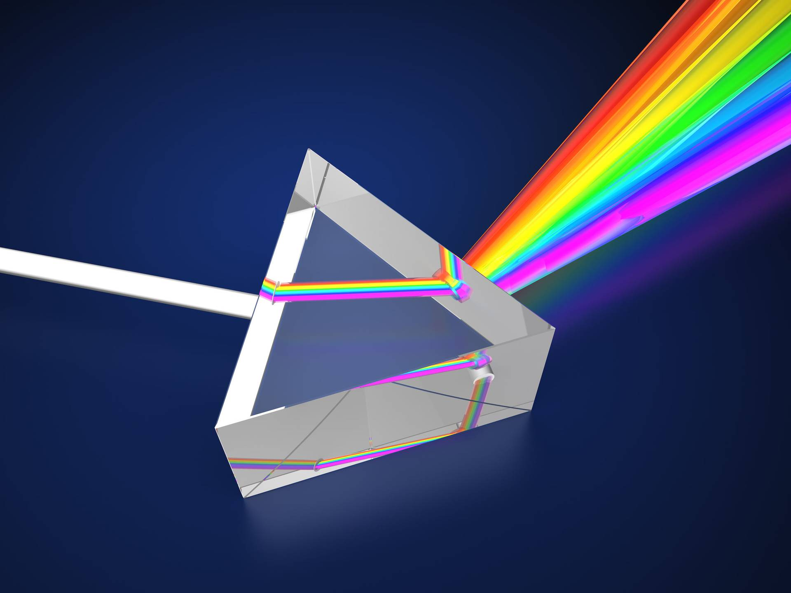

Introduction
Space is a three-dimensional continuum containing positions and directions. In classical physics, physical space is often conceived in three linear dimensions. Modern physicists usually consider it, with time, to be part of a boundless four-dimensional continuum known as spacetime.
Section 1: Introduction
Spectroscopy is the method through which light can be used to discover what objects are made of. When this light is shone on an object, the object will absorb the light, and some of that absorbed light bounces back. Knowing the colors of returned light allows the scientist to know what materials are present in a particular object. There are various reasons for spectroscopy: optical spectroscopy involves visible light. Scientists in space are using spectroscopy to determine what the stars and planets are made of. They can see the "fingerprints" by breaking the light from those objects into different colors, just like a rainbow. For spectroscopy, it lets scientists know not only what things are made of but also their temperature and speed and even if they have an atmosphere.
Section 2: Real-World Applications
Spectroscopy does not only apply in space; it can be applied in everyday life. For example, doctors are using spectroscopy in hospitals to help diagnose a disease. For instance, MRI scans used a type of spectroscopy to produce images of our insides. In science labs, scientists use spectroscopy to identify chemicals from a sample. It can also be used to detect pollutants from the air and water; hence it applies to environmental studies. In astronomy, spectroscopy permits scientists to know what remote stars, planets, and galaxies are made up of. It's really helpful in studying planets outside our solar system to determine if such a planet has a good condition for life. In short words, spectroscopy is one of the most useful instruments that provide everyone with everything from the tiny particles in a lab to the big stars in the sky.